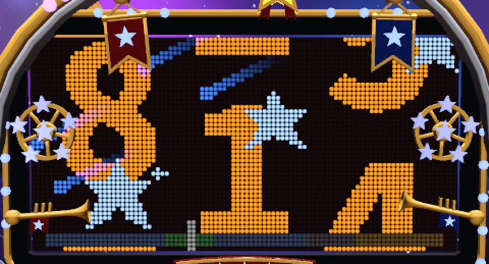
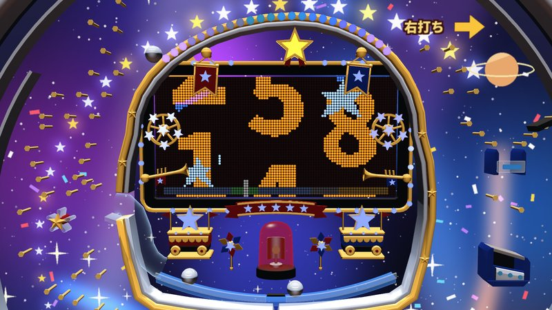
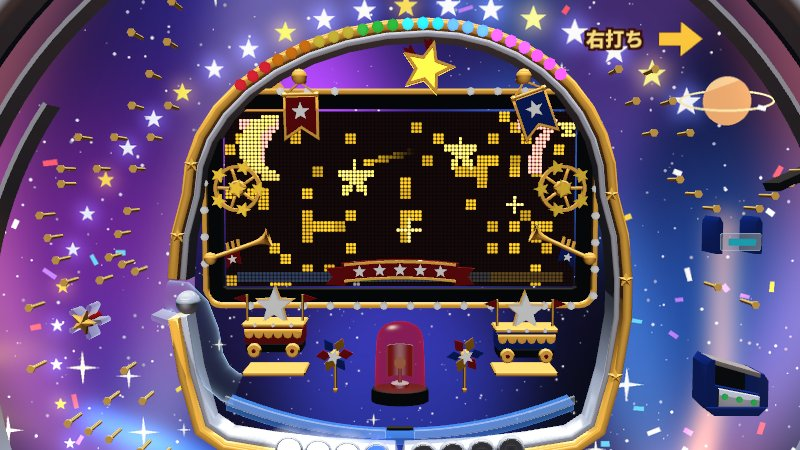
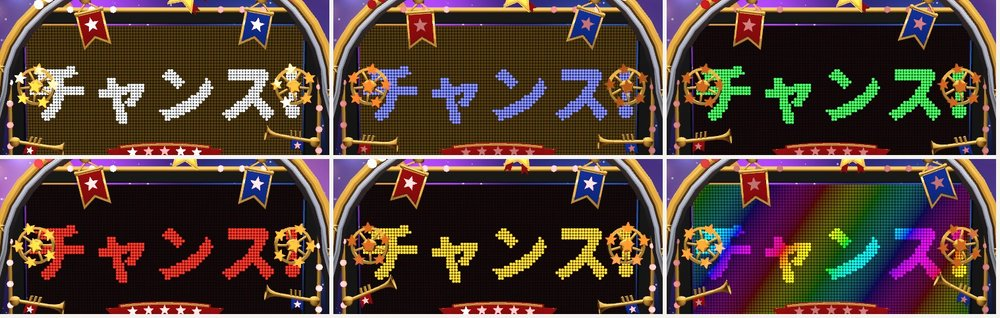
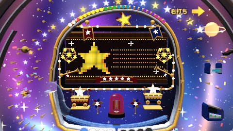
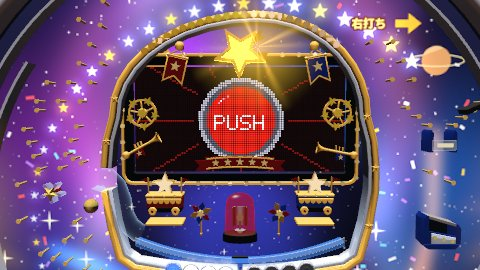

最后更新：2026-11-28（周六）
STAR PARADE
 盘面
盘面
带点阵显示和警示灯的确变循环机。确变持续到下一次大当，通常大当之后是 15 转时短（Chance Time）。岛的前排（南侧）西端有 4 台。
规格
| 大当概率 | 1/69.7 |
|---|
| 确变中 | 1/20.0 |
|---|
| 确变 | 持续到下一次大当 |
|---|
| 时短 | 15 转（Chance Time） |
|---|
| 突入率 | 约 69%（含拉回） |
|---|
| 继续率 | 约 81%（含拉回） |
|---|
| 回合数 | 6R、3R（1R 10 个） |
|---|
| 出珠 | 6R 约 480 颗、3R 约 240 颗 |
|---|
| 奖球 | 启动口 3、电动入口 2、大奖口 8、入赏口 3 |
|---|
| 250 颗转的次数 | 约 35 次（试算，含止打） |
|---|
| 机械割 | 约 141%（试算） |
|---|
※Chance Time 15 转的拉回约 19%。边界线调查中。
大当分配
| 入赏口 | 6R 确变 | 3R 确变 | 3R 通常 |
|---|
| 启动口 | 10% | 51% | 39% |
|---|
| 电动入口 | 25% | 51% | 24% |
|---|
※777 是 6R 确变，其他奇数是 3R 确变，偶数是 3R 通常。就算是偶数，也有确变升格机会。
普图与电动辅助
普图（普通图柄）是决定电动入口开不开的抽选。电动辅助就是电动入口开得多、开得久的状态。
| 通常 | 确变、Chance Time |
|---|
| 普图的中奖概率 | 1/16 | 9/10 |
|---|
| 普图的旋转时间 | 12 秒 | 1.2 秒 |
|---|
| 电动入口开放 | 0.15 秒×1 次 | 1.6 秒×2 次 |
|---|
打法
- 力度是自动的
- 大当、确变、Chance Time 中会自动右打
| 左打 | 经过天钉、裙钉、风车、道钉、跳跃钉和命钉进入启动口。从役物左肩进入传送口的珠，会从舞台经过中间的洞和隧道，出现在启动口的正上方 |
|---|
| 右打 | 从回弹胶条依次经过通过门、电动入口、大奖口 |
|---|
模式
| 模式 | 概率 | 分辨方法 |
|---|
| 通常 | 1/69.7 | 普通的边框 |
|---|
| 确变 | 1/20.0 | 红色和金色的光绕着液晶的边框转。盘面的光是红紫色 |
|---|
| Chance Time | 1/69.7 | 蓝色边框。上边显示剩余转数，剩 5 转起倒数 |
|---|
 确变中
确变中
 Chance Time 中
Chance Time 中
演出信赖度
※信赖度是解析值（通常时）。50% 以上和确定用红字。
保留的颜色
| 颜色 | 信赖度 |
|---|
| 蓝 | 1.7% |
| 绿 | 7.0% |
| 红 | 31.0% |
| 金 | 64.1% |
| 虹 | 确定 |
Reach
| 演出 | 信赖度 |
|---|
| 普通 Reach | 3.1% |
| 超级 Reach | 25.4% |
| 全回转 | 确定 |
| 最终决战（PUSH） | 51.6% |
预告
| 颜色 | 夜空预告 | 流星预告 |
|---|
| 整体（不分颜色） | 1.3% | 18.4% |
| 白 | 0.2% | 3.5% |
| 蓝 | 0.7% | 10.1% |
| 绿 | 1.7% | 23.1% |
| 红 | 6.3% | 52.9% |
| 金 | 23.5% | 83.8% |
| 虹 | 确定 | 确定 |
阶段预告
| 演出 | 信赖度 |
|---|
| 到第 1 级 | 4.3% |
| 到第 2 级 | 10.6% |
| 到第 3 级 | 34.1% |
| 到第 4 级 | 66.9% |
| 到第 5 级 | 91.0% |
拟似连
| 演出 | 信赖度 |
|---|
| ×2 | 6.0% |
| ×3 | 28.7% |
| ×4 | 50.9% |
变动开始
| 演出 | 信赖度 |
|---|
| 蓄力 | 1.6% |
| 逆转 | 4.0% |
| 颤抖 | 13.2% |
| 逐个 | 22.9% |
| 闪光 | 48.8% |
| 落下 | 1.9% |
| 吸入 | 2.1% |
| 从右边 | 10.8% |
| 角色推进 | 41.4% |
数字的转法
| 演出 | 信赖度 |
|---|
| 倒置 | 2.1% |
| 翻页 | 7.1% |
| 滚筒 | 11.4% |
| 洗牌 | 24.0% |
预兆（在上方奔跑的角色）
| 演出 | 信赖度 |
|---|
| 伙伴（3 只） | 1.1% |
| 大游行（6 只） | 2.6% |
| 金 | 12.9% |
| 虹 | 66.0% |
Reach 中的预告
| 演出 | 信赖度 |
|---|
| 夜空预告 | 14.8% |
| 流星预告 | 30.2% |
超级 Reach 后半段
| 演出 | 信赖度 |
|---|
| 逐帧 | 11.3% |
| 重涂 | 29.9% |
| 倒数 | 18.5% |
| 流星 | 57.7% |
チャンス!（机会！）的颜色
| 颜色 | 信赖度 |
|---|
| 白 | 3.2% |
| 蓝 | 7.8% |
| 绿 | 16.7% |
| 红 | 42.9% |
| 金 | 69.9% |
| 虹 | 确定 |
Reach 的结束方式
| 演出 | 信赖度 |
|---|
| 骤停 | 6.5% |
| 滑动 | 18.8% |
| 退回 | 21.7% |
| 摇晃 | 9.4% |
| 最后一刻停住 | 29.4% |
确定演出
虹色保留、黑屏、变动开始时的警示灯、复活、冻结、全灭灯
演出解说
数字
数字是橙色的点阵字，平常纵向流动着转。
保留
保留在启动口和电动入口各存 4 个，电动入口优先。颜色依次是蓝、绿、红、金、虹，从金色开始算激热，虹色是确定。
 保留灯（亮着的就是保留）
保留灯（亮着的就是保留）
 保留变化（最左边从白变蓝）
保留变化（最左边从白变蓝）
预告与拟似连
- 夜空预告偏弱，流星预告偏热。两种都有 6 级颜色（白、蓝、绿、红、金、虹）。流星预告从红色开始算激热，虹色是确定
- 预告在 Reach 中也会出现

流星预告
 阶段预告的第 4 级
阶段预告的第 4 级
预告的颜色（分镜）
 夜空预告（绿）
夜空预告（绿）

流星预告（蓝）

Reach 中的夜空预告（金）
拟似连（分镜）
 第 1 次（绿）
第 1 次（绿）
 第 2 次（红）
第 2 次（红）
 第 3 次（金）
第 3 次（金）
Reach
- Reach 的线是金色，超级 Reach 的数字是红色
- 普通 Reach 的演法是标准和放大。超级 Reach 后半段的类型是逐帧、倒数、重涂、流星
- 超级 Reach 后半段开头出现的「チャンス!」（机会！），字的颜色代表期待度（白、蓝、绿、红、金、虹。虹色是确定）
- 流星：流星 5 次击中中间的数字，每次击中数字都会变。第 4 次是差 1 个就对齐的数字
- 超级 Reach 中，点阵显示里的星星和月亮会给你加油。中奖的话月亮会变成满月
- 最终决战时，点阵显示前面会出现 PUSH 按钮

「チャンス!」（机会！）的颜色（白、蓝、绿、红、金、虹）
超级 Reach 的流程（分镜）

1. 开场的插入画面
 2. 后半段的「激アツ」（激热）
2. 后半段的「激アツ」（激热）
 3. 最终决战
3. 最终决战

4. PUSH
插入画面和 PUSH 的画面有好几种
 插入画面（月亮）
插入画面（月亮）
 插入画面（5 颗星）
插入画面（5 颗星）
 PUSH（文字）
PUSH（文字）
 超级 Reach 中的星星和月亮
超级 Reach 中的星星和月亮
警示灯
役物里的旋转灯。转了就是大当。
大当时转动的时机
| 变动开始时 | 4% |
| Reach 成立时 | 18% |
| 揭晓时（Reach 的结局） | 78% |
特殊演出、隐藏要素与小知识
※有剧透。点击展开
特殊演出（大当确定）
| 演出 | 内容 |
|---|
| 黑屏 | 变动开始时长时间暗转，然后直接进入全回转 |
|---|
| 冻结 | 变动开始的同时一切停住、声音消失，闪光后直接进入全回转 |
|---|
| 全灭灯 | 液晶和机台的灯饰全部熄灭、声音也没了，闪光后直接进入全回转 |
|---|
| 变动开始时的警示灯 | 旋转一开始警示灯就转 |
|---|
| 虹 | 虹色保留、虹色预告（夜空、流星） |
|---|
| 全回转 | 只在黑屏、冻结、全灭灯之后出现。333 或 777 对齐。转到最后，以虹色停下 |
|---|
| 复活 | 超级 Reach 里先装成没中，然后中奖 |
|---|
 全回转（分镜。虹色数字停在 333）
全回转（分镜。虹色数字停在 333）
隐藏要素
- 确变升格机会：以偶数对齐后，先进入机会时间（时短 15 次）。时短的最后一转落空后会重新转动，停在奇数就升格为确变。3R 确变里有 30% 是先以偶数对齐再升格，3R 通常里有 40% 是挑战升格但失败
- 保留先读：保留进来时，看到的颜色可能比真实颜色低 1～2 级。等待期间会一级一级往上升，没升完的部分会在变动开始时的机会提升里补上。变动开始时只是白色保留闪一下，就是假演出
- 机会区：先读的区间。前面有 2 个以上保留时才会出现。区间一来，至少是超级 Reach
- 期待度计量表：边框左右的灯饰从下往上依次填成蓝、绿、红、金。能升到虹色的，只有虹色保留、黑屏、全回转，以及揭晓时中奖的情况
- 星星役物：在超级 Reach 的第 2 级落下来就有 92.9%。就算失败退回，复活时还会再落下来
 确变升格
确变升格
小知识
- 机会目 311：没有 Reach 的未中，停在 311 时会发出金光并弹跳。前面的保留里有大当时更容易出现，是 60.7%。不会碰巧停在 311
- 确变、Chance Time 中不会出现预告、阶段预告、拟似连和变动开始演出
数据计数器
 数据计数器
数据计数器
机台上方有大当、连庄、开始、上次 4 项和店内人数。